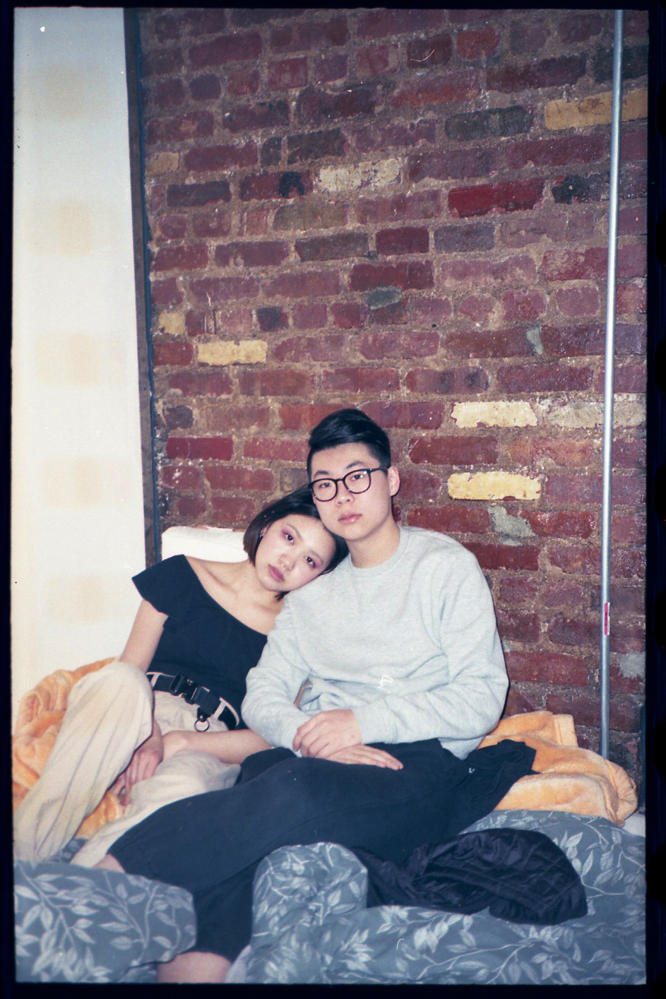
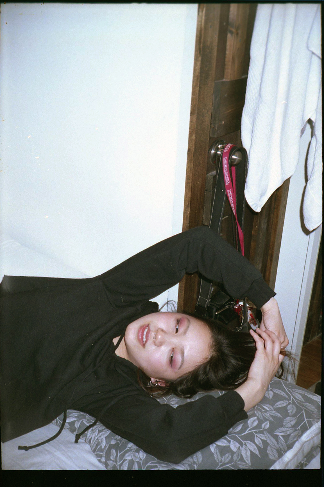

Lulin Liu + Sonny Ou
lulin is a sophomore pursuing fashion design. sonny is a photographer who aspires to work in film production and creative direction.

East Village, Manhattan, NY
03.26.19 7:40 pm
Tell me about your background. What is your heritage and where did you grow up?
L: I’m Taiwanese American, I grew up in California but I was born in Taiwan; I came to California when I was one year old.
S: I’m 19, born and raised in Brooklyn, I’m just an ABC. I’m Cantonese, a lot of my family is in Hong Kong, but we’re originally from Guangzhou and Hoisan.
How has your experience been as an Asian woman navigating the city?
L: I am really comfortable in Asian areas; when I go to Chinatown, 8 Ave Brooklyn or Flushing, I really like the energy there. In some ways it reminds me of my home in California, there it's very much a Asian bubble. It's familiar, but not really, it's an East Coast variation of that. I guess when I first came here, anything that wasn't specifically Asian was a little foreign to me, like the rest of NY.
S: What's that variation between the East Coast and West Coast Asian bubble?
L: There's not so much of an Asian bubble here. You'll have pockets where there's a lot of this demographic, a lot of Asians here, but as a whole it's still super integrated.
Everything is just closer together here, we're all on top of each other and I think that can cause some conflict. Sonny, how do you sense your identity here, does it shift in different neighborhoods?
S: I feel normal, because I am from New York, I've seen it all. The only time when I'm massively uncomfortable is when a situation gets a little too white, where it starts being very apparent that I am Asian and they are not. I guess in terms of where I am in the city, maybe just the business parts of New York, Midtown especially. I've had a lot of business meetings with my peers and just their small talk is so foreign to me. I'm not saying that I don't like white people, I just feel like it's incredibly hard for me to relate to them.

What does the term yellow fever mean to you or say to you?
L: What I think yellow fever is when you fetishize an Asian woman, either elevate them, but it's also putting them down in a way. You perceive them in a different way just because of their race or stereotypes surrounding them. I think a common definition would be white guys thinking Asian women are submissive or they're more obedient or they fulfill some weird fantasy they have, some orientalist fantasy that they've created, based off maybe ... I don't know if the media plays a role, maybe it does.
I would definitely say that media and pop culture, stereotyped portrayals of Asian women in movies, play a significant role. How do you think these stereotypes affect Asian men?
S: Ok, so yellow fever doesn't affect Asian men at all. If anything, the media has perpetuated a stereotype in terms of Asian men that they're just bitches. And that's kind of fucked up. It's so ingrained into Asian Americans that we're just bitches. Sometimes whenever I'm talking to someone, say I'm working with them, in a meeting, I'll be talking and I just feel like they're not taking me seriously, because of the stereotypes. And it really, really sucks.
What do you think these stereotypes stem from and are perpetuated by?
L: They take traits they see and blow them up and turn them into something to encompass this entire population, who they probably are not as informed about. You use it to put them down and keep not only your power, but a certain distance, to create this divide.
S: It's just the media, in the beginning it was racism and then it was the media that just made it a whole lot worse.

"These orientalist fantasies that you project onto a real person— they could completely not be that and then you don't really see them as a real person. You make them desirable, but also put them down, because the reason for them being desirable is completely based on something false that your Western perspective made up."

I feel like it still is a form of racism. So Lulin mentioned that you two have talked about relationships between Asian women and white men before; do you want to discuss that conversation or your perspectives?
L: Remember when you saw some Asian girl with a white guy and you got real angry about it, and I was like, 'Why are you so mad, just because he's white and she's Asian?' We had this whole conversation about how Asian guys can't get white girls and I tagged Sonny in this meme and I roasted him in the comments, I was like, 'Bro, you come here one more fucking time telling me how Asian guys can't get white pussy, you not gonna get this Asian pussy either.' And I'm proud to say it got like a couple likes, 50 plus.
That was just a conversation we had, and I thought that was kind of interesting, but in a way I feel like it's almost making Asian girls seem like second choice. But I know that's not what you meant.
S: That's absolutely not what I meant. All I'm saying is that Asian men, we really can't date outside our own race. We don't have that privilege, because of the stereotypes put against us. And the stereotypes are in everyone, whether you choose to believe them or not, it shows in terms of who you are attracted to.
You're saying that Asian men don't have the privilege to date white women on the same level, and we should all be on an equal playing field.
S: Exactly, it should be an equal playing field. That's not to say that Asian girls are a second choice, I'm just trying to point out how it's unfair. It's ultimately unfair.
You would have to have more positive traits as an Asian guy to overcome the fact that you're Asian, in order to be seen as dateable.
L: Asian men are given this responsibility of compensating even though white men don't have to.
S: I want you to find one crusty ass Asian dude with some hot ass white girl. You don't see it often, the only time I've seen it is Lorde and that Japanese dude.
And people were roasting her boyfriend, asking why she was dating him, as if it was unbelievable. So how are these ideas dangerous?
L: I think they promote this really weird dynamic, where it's just another way for white people to show power over non-white people. We've seen it in a really big way, colonialism is a political and very official realm, but even in love and sexuality and romance, we can see that leak in there. I think it's really dangerous, because it relates to this big whole idea that white people are better, or have the power in this dynamic and in our society.
S: I think it just perpetuates it. I'm not saying that it's impossible for a white guy to be cultured and know about yellow fever and truly believes, 'I actually love her, because I love her, not because she's Asian.' But be prepared to be scrutinized for it, because honestly, how could you not? Whenever I see a couple like that, if I were to ask that white guy, 'Do you have yellow fever?' if he says no, I can't help but think, 'Really, you really don't have yellow fever? There's not even a little shred of you that feels like Asian girls are exotic?'
I've definitely felt that way before. A month ago, I was feeling like I almost have to stop dating white guys, because even if they aren't explicit about it, somewhere subconciously those thoughts are there. But that's also furthering a divide.
L: That it's subconcious, yeah. I feel like white people are aware of the distance that they created and so for them to go into that relationship ... I'd be suspicious, I probably wouldn't be able to believe that they're not in some way even subconsciously expressing that power dynamic by fetishizing that girl.
S: Also I have beef with the Asian girls going after white guys, because you're just feeding directly into the system. That's exactly what you're doing. And she could also say the same thing, 'Oh I love him'- you're also directly enabling this to happen, you're letting this happen and everyone else is paying for it. Which is why I really don't like seeing it.

"I think the fetishization of Asian women and the way they put down Asian men is an inverse thing— you're elevating one and you're demoting one, but I feel like both ways are equally damaging and both are ways to maintain that power dynamic and assert Western dominance."
See it's a tricky position, because everyone should be able to date whatever race they want to, it should be totally equal. And Asian women should be able to date white men without playing into these notions.
L: Actually, my best friend, she's currently dating a white guy. I always see these tweets, just something making fun of that pairing, and I send them to her as a joke, but then she says she actually gets really self-concious. I don't know, it's also not really a responsibility to put on the Asian women entirely. Just because she's in a happy relationship with someone outside of her race, I don't think that necessarily means she's enabling this entire terrible system.
Because how can you stop this from happening and not play into it, but also at the same time be able to date whoever you want.
L: Yeah, to be able to freely love. I do see a lot of Asian girls getting made fun of on social media for pursuing white dudes. I don't know if it's Asian men that are saying this or who exactly, sometimes I find it funny too, but then I feel kind of bad.
S: It's fair to say it's a case by case basis, because it's so complex.
L: It's just so personal, you can't put that kind of systemic responsibility on a personal relationship, it's just too much.
Do you think white men are responsible for changing these perceptions or who is responsible?
L: Everyone has to carry their weight. I think white men owe the world a little bit of awareness, especially considering history, just to be open to these different perspectives, to know how it's damaging and be open to admit fault in these ideas. It might not be their individual responsibility or individual fault, but that's how our society has been structured and how they've been subconciously taught, so I think they owe that awareness to learn otherwise.
S: I think that everyone just needs to become more educated about this shit, that's honestly it. Just be aware of this and don't date Asian girls, because they're Asian.
L: If you have Asian friends you're going to hear about this dialogue in a non-hostile way and you're going be able to communicate about it and have conversations about it. So I think the more you integrate, the more you have relationships with people outside your likeness, then you'll start to understand more and more.
So maybe interracial relationships are important, in that sense.
L: Yeah, they could totally be a tool in kind of this education.